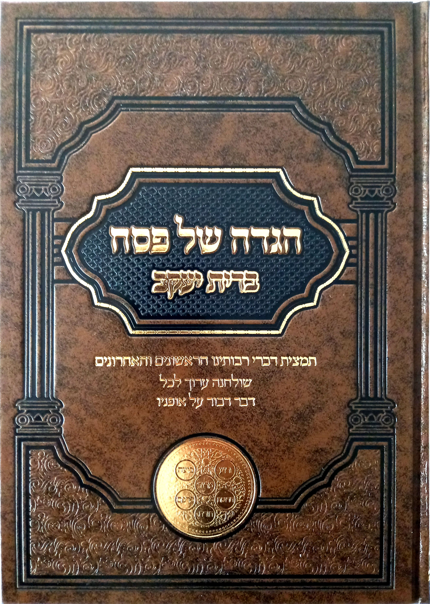
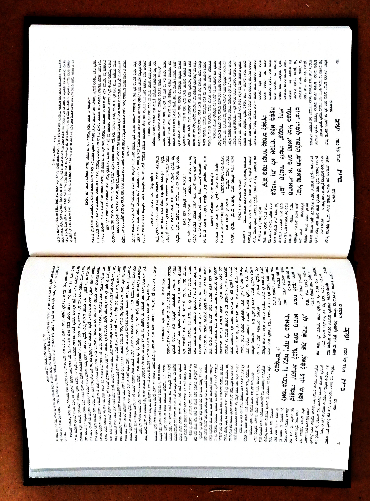

המלצות מגדולי ישראל
הרב אביגדור נבנצל
"ערוכה בטוב טעם ודעת… לא נצרכה אלא לברכה."
"ערוכה בטוב טעם ודעת… לא נצרכה אלא לברכה."
הרב בנימין פינקל
"ליקוט נפלא ומיוחד מרבותינו הראשונים והאחרונים ככתבם וכלשונם… מסייע להתבונן ביציאת מצרים."
"ליקוט נפלא ומיוחד מרבותינו הראשונים והאחרונים ככתבם וכלשונם… מסייע להתבונן ביציאת מצרים."
הרב מרדכי דוד נויגרשל
"מהדורה זו – מעשה אמן… תמצית דברי הראשונים והאחרונים מסודרים במקומם הראוי."
"מהדורה זו – מעשה אמן… תמצית דברי הראשונים והאחרונים מסודרים במקומם הראוי."
הרב אשר וייס
"ספר מסודר להפליא… ליקוט בהיר ומדויק המביא תועלת רבה ללומדים."
"ספר מסודר להפליא… ליקוט בהיר ומדויק המביא תועלת רבה ללומדים."
הרב אליהו זילברמן
מה מיוחד בהגדה?
- לשון ההגדה במרכז העמוד בצורה נקייה וברורה.
- פירושי הראשונים בלשונם המקורית והמתומצתת.
- סיכום דברי האחרונים בניסוח בהיר ומדויק.
- כל הפסוקים הנדרשים מופיעים במלואם בתוך אותו עמוד.
- תרשימי מבנה ההגדה וארבעת הבנים בסוף הספר.
גלריית תמונות



להזמנות
0525-278860